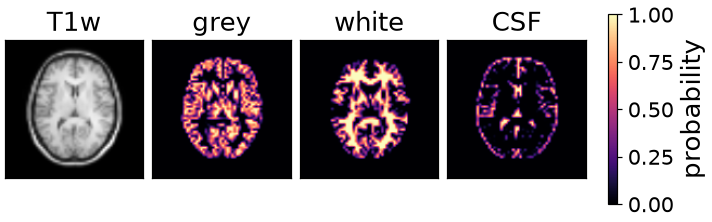
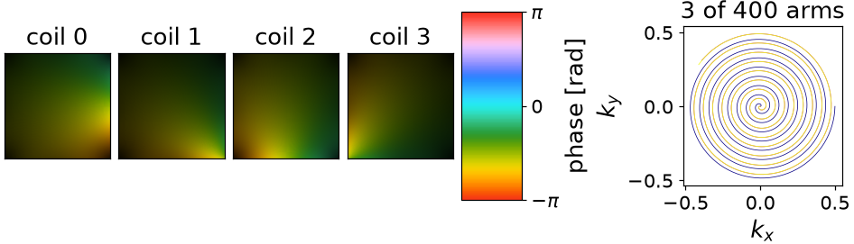
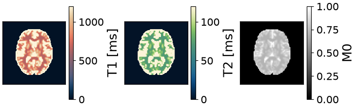
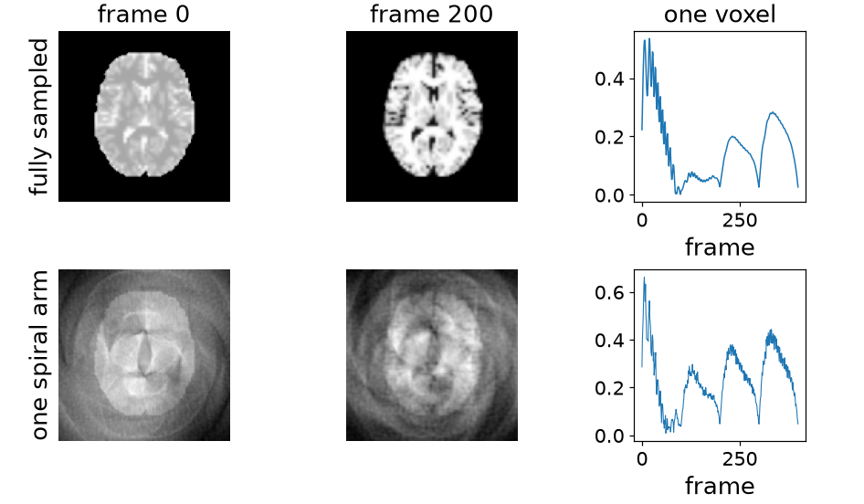

Note
Go to the end to download the full example code or to run this example in your browser via Binder.
Synthetic MR fingerprinting#
The scope of this notebook is to build a training pair end to end: what a scanner would measure from a fingerprinting exam, and the maps it came from.
A subject is segmented into tissue classes; each class is given an M0, a T1 and a T2; one voxel per class is simulated by extended phase graphs; every voxel of a class is handed its class’s evolution; the volume is weighted by birdcage sensitivities and pushed through a frame-wise non-uniform Fourier transform; the k-space is brought back and coil-combined. The undersampled series and the fully sampled one are the pair, with the ground-truth maps and the segmentation.
Only the simulation is TorchSim’s. The phantom, the coils and the encoding come from torchio, deepmriprep, SigPy and mri-nufft.
Only one step of this pipeline is TorchSim’s. Four other packages do the rest, and each has exactly one job here:
torchiofetches a T1-weighted IXI subject and gives it as tensors, which is where the anatomy comes from;deepmriprepsegments that anatomy into grey matter, white matter and CSF with a U-Net – torch throughout, and it hands back probabilities rather than labels;sigpy.mrigenerates birdcage coil sensitivities to weight the volume with;mri-nufftsupplies the spiral trajectory and the non-uniform Fourier transform that plays it, forwards and back.
import mrinufft
from deepmriprep import Preprocess
import sigpy.mri as smri
import torchio as tio
from mrinufft.trajectories import initialize_2D_spiral
TorchSim’s part is the third step: one fingerprinting simulation per tissue class, rather than one per voxel.
import tempfile
import time
from pathlib import Path
import numpy as np
import torch
from torchsim.simulators import MRFSimulator
What the pair will be: a 128 matrix, four hundred frames, one spiral arm of 768 samples per frame, and eight receive channels.
SIZE = 128
FRAMES = 400
SAMPLES = 768
COILS = 8
SLICE = 110 # axial, at the level of the lateral ventricles
# The GPU transform is used when it is both installed and usable; the
# simulation follows it, so the images and the operator meet on one device.
on_gpu = torch.cuda.is_available() and mrinufft.check_backend("cufinufft")
device = "cuda" if on_gpu else "cpu"
backend = "cufinufft" if on_gpu else "finufft"
Subject#
One IXI subject through torchio: a T1-weighted volume at 1.5 T, and the only measurement this notebook starts from. The segmentation reads it; a table supplies the tissue properties a contrast cannot give.
download=True fetches the archive once, a few hundred MB, into a cache
under the home directory.
CACHE = Path.home() / ".cache" / "torchsim" / "ixi-tiny"
subject = tio.datasets.IXITiny(str(CACHE), download=True)[0]
Downloading https://www.dropbox.com/s/ogxjwjxdv5mieah/ixi_tiny.zip?dl=1 to /tmp/tmpy1nd76x9.zip
0it [00:00, ?it/s]
0%| | 0/233926107 [00:01<?, ?it/s]
3%|▎ | 7413760/233926107 [00:01<00:03, 74010975.24it/s]
11%|█ | 24829952/233926107 [00:01<00:01, 132874820.17it/s]
18%|█▊ | 42909696/233926107 [00:01<00:01, 154746846.77it/s]
26%|██▋ | 61595648/233926107 [00:01<00:01, 167398406.69it/s]
33%|███▎ | 76890112/233926107 [00:01<00:00, 157201666.65it/s]
39%|███▉ | 91766784/233926107 [00:01<00:00, 152744814.91it/s]
46%|████▌ | 108126208/233926107 [00:01<00:00, 154229875.47it/s]
53%|█████▎ | 123174912/233926107 [00:02<00:00, 151275000.04it/s]
63%|██████▎ | 147333120/233926107 [00:02<00:00, 178826420.08it/s]
73%|███████▎ | 170622976/233926107 [00:02<00:00, 195237025.08it/s]
81%|████████ | 190062592/233926107 [00:02<00:00, 134762556.39it/s]
89%|████████▉ | 208281600/233926107 [00:02<00:00, 141339668.27it/s]
97%|█████████▋| 227573760/233926107 [00:02<00:00, 152081631.52it/s]
233930752it [00:02, 79312731.32it/s]
Tissue classes#
deepmriprep segments the head into grey matter, white matter and CSF with
a U-Net, in torch and on the same card as everything else. It returns three
probability maps rather than one label per voxel, which is the difference
between a phantom with partial volume in it and one without.
NAMES = ("grey matter", "white matter", "CSF")
segmentation = Preprocess().run(
str(subject.image.path),
output_paths={
name: f"{tempfile.gettempdir()}/{name}.nii.gz" for name in ("p1", "p2", "p3")
},
run_all=False,
)
Downloaded https://raw.githubusercontent.com/wwu-mmll/deepmriprep/main/deepmriprep/data/models/brain_extraction_bbox_model.pt to /opt/hostedtoolcache/Python/3.12.14/x64/lib/python3.12/site-packages/deepmriprep/data/models/brain_extraction_bbox_model.pt
Downloaded https://raw.githubusercontent.com/wwu-mmll/deepmriprep/main/deepmriprep/data/models/brain_extraction_model.pt to /opt/hostedtoolcache/Python/3.12.14/x64/lib/python3.12/site-packages/deepmriprep/data/models/brain_extraction_model.pt
Downloaded https://raw.githubusercontent.com/wwu-mmll/deepmriprep/main/deepmriprep/data/models/segmentation_nogm_model.pt to /opt/hostedtoolcache/Python/3.12.14/x64/lib/python3.12/site-packages/deepmriprep/data/models/segmentation_nogm_model.pt
Downloaded https://raw.githubusercontent.com/wwu-mmll/deepmriprep/main/deepmriprep/data/models/segmentation_patch_0_model.pt to /opt/hostedtoolcache/Python/3.12.14/x64/lib/python3.12/site-packages/deepmriprep/data/models/segmentation_patch_0_model.pt
Downloaded https://raw.githubusercontent.com/wwu-mmll/deepmriprep/main/deepmriprep/data/models/segmentation_patch_1_model.pt to /opt/hostedtoolcache/Python/3.12.14/x64/lib/python3.12/site-packages/deepmriprep/data/models/segmentation_patch_1_model.pt
Downloaded https://raw.githubusercontent.com/wwu-mmll/deepmriprep/main/deepmriprep/data/models/segmentation_patch_2_model.pt to /opt/hostedtoolcache/Python/3.12.14/x64/lib/python3.12/site-packages/deepmriprep/data/models/segmentation_patch_2_model.pt
Downloaded https://raw.githubusercontent.com/wwu-mmll/deepmriprep/main/deepmriprep/data/models/segmentation_patch_3_model.pt to /opt/hostedtoolcache/Python/3.12.14/x64/lib/python3.12/site-packages/deepmriprep/data/models/segmentation_patch_3_model.pt
Downloaded https://raw.githubusercontent.com/wwu-mmll/deepmriprep/main/deepmriprep/data/models/segmentation_patch_4_model.pt to /opt/hostedtoolcache/Python/3.12.14/x64/lib/python3.12/site-packages/deepmriprep/data/models/segmentation_patch_4_model.pt
Downloaded https://raw.githubusercontent.com/wwu-mmll/deepmriprep/main/deepmriprep/data/models/segmentation_patch_5_model.pt to /opt/hostedtoolcache/Python/3.12.14/x64/lib/python3.12/site-packages/deepmriprep/data/models/segmentation_patch_5_model.pt
Downloaded https://raw.githubusercontent.com/wwu-mmll/deepmriprep/main/deepmriprep/data/models/segmentation_patch_6_model.pt to /opt/hostedtoolcache/Python/3.12.14/x64/lib/python3.12/site-packages/deepmriprep/data/models/segmentation_patch_6_model.pt
Downloaded https://raw.githubusercontent.com/wwu-mmll/deepmriprep/main/deepmriprep/data/models/segmentation_patch_7_model.pt to /opt/hostedtoolcache/Python/3.12.14/x64/lib/python3.12/site-packages/deepmriprep/data/models/segmentation_patch_7_model.pt
Downloaded https://raw.githubusercontent.com/wwu-mmll/deepmriprep/main/deepmriprep/data/models/segmentation_patch_8_model.pt to /opt/hostedtoolcache/Python/3.12.14/x64/lib/python3.12/site-packages/deepmriprep/data/models/segmentation_patch_8_model.pt
Downloaded https://raw.githubusercontent.com/wwu-mmll/deepmriprep/main/deepmriprep/data/models/segmentation_patch_9_model.pt to /opt/hostedtoolcache/Python/3.12.14/x64/lib/python3.12/site-packages/deepmriprep/data/models/segmentation_patch_9_model.pt
Downloaded https://raw.githubusercontent.com/wwu-mmll/deepmriprep/main/deepmriprep/data/models/segmentation_patch_10_model.pt to /opt/hostedtoolcache/Python/3.12.14/x64/lib/python3.12/site-packages/deepmriprep/data/models/segmentation_patch_10_model.pt
Downloaded https://raw.githubusercontent.com/wwu-mmll/deepmriprep/main/deepmriprep/data/models/segmentation_patch_11_model.pt to /opt/hostedtoolcache/Python/3.12.14/x64/lib/python3.12/site-packages/deepmriprep/data/models/segmentation_patch_11_model.pt
Downloaded https://raw.githubusercontent.com/wwu-mmll/deepmriprep/main/deepmriprep/data/models/segmentation_patch_12_model.pt to /opt/hostedtoolcache/Python/3.12.14/x64/lib/python3.12/site-packages/deepmriprep/data/models/segmentation_patch_12_model.pt
Downloaded https://raw.githubusercontent.com/wwu-mmll/deepmriprep/main/deepmriprep/data/models/segmentation_patch_13_model.pt to /opt/hostedtoolcache/Python/3.12.14/x64/lib/python3.12/site-packages/deepmriprep/data/models/segmentation_patch_13_model.pt
Downloaded https://raw.githubusercontent.com/wwu-mmll/deepmriprep/main/deepmriprep/data/models/segmentation_patch_14_model.pt to /opt/hostedtoolcache/Python/3.12.14/x64/lib/python3.12/site-packages/deepmriprep/data/models/segmentation_patch_14_model.pt
Downloaded https://raw.githubusercontent.com/wwu-mmll/deepmriprep/main/deepmriprep/data/models/segmentation_patch_15_model.pt to /opt/hostedtoolcache/Python/3.12.14/x64/lib/python3.12/site-packages/deepmriprep/data/models/segmentation_patch_15_model.pt
Downloaded https://raw.githubusercontent.com/wwu-mmll/deepmriprep/main/deepmriprep/data/models/segmentation_patch_16_model.pt to /opt/hostedtoolcache/Python/3.12.14/x64/lib/python3.12/site-packages/deepmriprep/data/models/segmentation_patch_16_model.pt
Downloaded https://raw.githubusercontent.com/wwu-mmll/deepmriprep/main/deepmriprep/data/models/segmentation_patch_17_model.pt to /opt/hostedtoolcache/Python/3.12.14/x64/lib/python3.12/site-packages/deepmriprep/data/models/segmentation_patch_17_model.pt
Downloaded https://raw.githubusercontent.com/wwu-mmll/deepmriprep/main/deepmriprep/data/models/segmentation_model.pt to /opt/hostedtoolcache/Python/3.12.14/x64/lib/python3.12/site-packages/deepmriprep/data/models/segmentation_model.pt
Downloaded https://raw.githubusercontent.com/wwu-mmll/deepmriprep/main/deepmriprep/data/models/warp_model.pt to /opt/hostedtoolcache/Python/3.12.14/x64/lib/python3.12/site-packages/deepmriprep/data/models/warp_model.pt
128x128 slice, 5735 brain voxels; 92% are a mixture of two tissues or more
The contrast the subject arrived as, and the three probabilities the network made of it:

Each class is given the three numbers a simulation needs, tabulated at 1.5 T. None could be read off this subject: a T1-weighted volume is a contrast, not a map. The measurement supplies where each tissue is and in what proportion; the table supplies what each class is taken to be. A relaxometry protocol on the same subject would fill the table from data instead.
NAMES_M0 = torch.tensor([0.80, 0.70, 1.00]) # relative proton density
NAMES_T1 = torch.tensor([1100.0, 650.0, 4000.0]) # ms, at 1.5 T
NAMES_T2 = torch.tensor([95.0, 70.0, 2000.0]) # ms, at 1.5 T
dominant = fractions > 0.5
class_M0 = NAMES_M0
class_T1 = NAMES_T1
class_T2 = NAMES_T2
tissue voxels M0 T1 (ms) T2 (ms)
grey matter 2427 0.80 1100 95.0
white matter 2294 0.70 650 70.0
CSF 571 1.00 4000 2000.0
Simulation per class#
An inversion, then four hundred repetitions whose flip angle sweeps.
MRFSimulator takes arrays of tissue properties,
so the whole table is one call: three extended phase graph runs rather than
sixteen thousand.
schedule = 5.0 + 55.0 * torch.sin(torch.linspace(0.0, 4 * torch.pi, FRAMES)).abs()
simulator = MRFSimulator(TR=12.0, TI=20.0, T1=class_T1, T2=class_T2)
per_class = torch.as_tensor(simulator.simulate(flip=schedule))
3 classes x 400 frames in 0.4s -> (3, 400)
Whole-brain volume#
A voxel that is part grey matter and part CSF produces the sum of what the two do, weighted by how much of each is present – not the signal of their averaged relaxation times. The mixing happens on the signals, which is one matrix product against the per-class evolutions.
Averaging the parameters and simulating once is wrong wherever a voxel is not pure: an inversion-prepared train is markedly nonlinear in T1.
weights = (fractions * class_M0).to(per_class.dtype)
series = (weights @ per_class) * brain[..., None]
# The maps that go out as ground truth are the mixture averages, which is what
# a single-compartment fit of this data could return at best.
share = occupancy.clamp_min(1e-6)
truth_M0 = (fractions @ class_M0) * brain
truth_T1 = (fractions @ class_T1) / share * brain
truth_T2 = (fractions @ class_T2) / share * brain
Coils and encoding#
Birdcage sensitivities from SigPy, then one spiral arm per frame rotated by the golden angle. A single arm of 768 samples against a 128 x 128 matrix is twenty-one-fold undersampled, which is how MRF is run.
sensitivities = torch.as_tensor(smri.birdcage_maps((COILS, SIZE, SIZE))).to(
torch.complex64
)
trajectory = initialize_2D_spiral(
FRAMES, SAMPLES, tilt="golden", nb_revolutions=8
).astype(np.float32)
build = mrinufft.get_operator(backend)
arms = [
build(
trajectory[frame], (SIZE, SIZE), n_coils=COILS, squeeze_dims=False, density=True
)
for frame in range(FRAMES)
]
coil_series = (sensitivities[:, None] * series.movedim(-1, 0)[None]).to(device)
kspace = torch.stack(
[arms[frame].op(coil_series[:, frame][None])[0] for frame in range(FRAMES)]
)
400 arms built in 3.8s
forward NUFFT 3.6s -> (400, 8, 768)
Eight birdcage sensitivities, and one spiral arm per frame rotated so that consecutive frames sample different parts of k-space.

Reconstruction#
Adjoint per frame, then a sensitivity-weighted coil combination, available here because the maps are known. A real pipeline would estimate them.
adjoint and combine 3.8s
Data pair#
Each frame is one spiral arm, so the aliasing is worse than the signal. What survives is the time course, and that is what a fingerprinting reconstruction reads.
per-frame error inside the brain : 60.7%
time-course agreement : median 0.893, tenth percentile 0.714
Fifty percent wrong frame by frame, and the fingerprints still line up above 0.86 for nine voxels in ten. That gap is the premise of the method: the input is what the scanner gives, artefacts and all, and the target is the curve underneath.
Phantom summary#

Inspecting the pair#

Exporting#
The pair, the ground truth, the segmentation, and the schedule and trajectory that produced them. It goes to a temporary directory here so that a documentation build leaves no archive behind.
contents = {
"undersampled": undersampled.cpu().numpy(),
"reference": reference.cpu().numpy(),
"M0": truth_M0.numpy(),
"T1": truth_T1.numpy(),
"T2": truth_T2.numpy(),
"tissue_probabilities": fractions.numpy(),
"flip_angles_deg": schedule.numpy(),
"trajectory": trajectory,
}
synthetic_mrf.npz 56.6 MiB
undersampled (400, 128, 128) complex64
reference (400, 128, 128) complex64
M0 (128, 128) float32
T1 (128, 128) float32
T2 (128, 128) float32
tissue_probabilities (128, 128, 3) float32
flip_angles_deg (400,) float32
trajectory (400, 768, 2) float32
Command-line use#
Everything above is fixed except three inputs:
a T1-weighted NIfTI, which replaces the torchio subject and is what the segmentation was trained on, so the CSF map stops being the weak one;
a matfile carrying the trajectory and the flip-angle schedule, read instead of the spiral and the sine generated here;
an output path, replacing the temporary directory.
The tissue table is the one thing decided rather than read. A relaxometry protocol on the same subject would fill it from data, which is what the parameter-inference notebooks do.
Total running time of the script: (2 minutes 4.738 seconds)